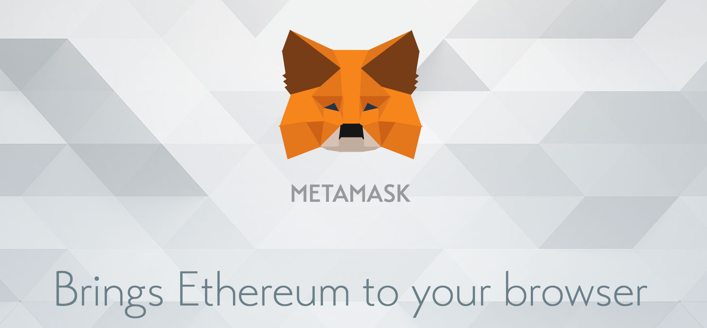

Podrobný rozbor používání Metamasku
V tomto článku si odpovíme například na tyto otázky: K čemu je dobrý Metamask? Jak Metamask funguje? K čemu jsou dobré testovací sítě? Jak se orientovat na blockchainu?

Tento článek si klade za cíl seznámit čtenáře s tím, jak ze svého prohlížeče udělat prohlížeč, který komunikuje s blockchainem a umožňuje používat webové aplikace využívající platformy Ethereum.
Provedeme si instruktážní postup, krok po kroku, jak dosáhnout propojení prohlížeče s blockchainem, aby toho byl schopen opravdu každý. Článek je trochu obsáhlejší, protože chce být průvodcem i pro úplné začátečníky, kteří se ještě nikdy s blockchainem nebo kryptoměnami nesetkali.
Moderní prohlížeče až na výjimky nepodporují přímou komunikaci s blockchainem, je tedy potřeba získat rozšíření, které takovou komunikaci zvládá. V našem případě, kdy chceme dosáhnout spojení s Ethereovým blockchainem, je dobrou a prověřenou volbou rozšíření Metamask.
Ten je možné stáhnout po navštívení stránek www.metamask.io, kde zjistíte, že v současnosti je toto rozšíření podporováno pro prohlížeče Chrome, Firefox nebo Opera. Na těchto stránkách najdete také nějaké další informace o tomto produktu, společně s videem – určitě doporučuji shlédnout.
Můžeme pokračovat instalací, a že jsme hotovi, zjistíme podle toho, že se v našem panelu objevila ikona oranžové lišky. Doporučuji zvolit možnost vyzkoušet novou verzi, ta kromě malého panelu umožňuje manipulaci s účtem i na dedikované stránce.
Po nainstalování Metamasku je nutné založit si „účet“ a k jeho ochraně v prohlížeči je nutné zvolit heslo.
Je třeba klarifikovat, že „účet“ u Metamasku není účet, jak si ho představujeme – všechna data včetně našeho hesla, zálohovací fráze a privátních klíčů ke všem adresám nejsou uloženy někde na centrálním serveru firmy Metamask, ale nachází se pouze v našem prohlížeči, kde k nim nemá přístup nikdo jiný než my – a možná velmi schopní hackeři, kteří Vám ale pravděpodobně nebudou chtít ukradnout testovací ethereum :).
Zde leží krása blockchainových a obecně decentralizovaných řešení a aplikací - osobní a citlivá data si každý uživatel spravuje sám, bez vkládání důvěry ve třetí osobu.
Tyto údaje nám říkají, že každá ethereová adresa má k sobě vygenerovaný specifický obrázek, který zjednodušuje kontrolu, se kterou adresou nakládáme.
Je nutné samozřejmě souhlasit s podmínkami, které ve zkratce říkají, že Metamask nenese žádnou zodpovědnost v případě, že se Vám někdo nabourá na účet, protože je na vás, abyste si dobře ochránili své heslo a následnou zálohovací frázi.
Poslední poznámka nás upozorňuje na fakt, že webové adresy mohou sledovat například ethereový zůstatek na aktivní metamaskové adrese, pokud je uživatel přihlášený – pro zlepšení soukromí doporučuje po konci interakce se stránkou odhlášení z Metamasku.
Nyní se dostáváme k velmi důležitému aspektu všech blockchainových a kryptoměnových aplikací, a tou jsou zálohovací fráze. Ty umožňují znovu získat přístup ke kryptoměnám ve všech případech, kdy ztratíte přístup ke svému Metamask účtu v tomto konkrétním prohlížeči, nebo když zapomenete heslo. Z této zálohovací fráze jsou deterministicky generovány privátní klíče ke všem vašim adresám, je tedy možný jednoduchý převod mezi jednotlivými prohlížeči nebo zařízeními. Tyto zálohovací fráze jsou v současné době standardizovány, a tedy i v případě, že by celý Metamask najednou zmizel ze světa, lze jednoduše obnovit přístup k prostředkům v jiném softwaru, který podporuje stejný standard.
Samotná znalost této fráze, i bez hesla, které jste před chvílí zadávali, stačí k tomu, aby mohl kdokoliv manipulovat s Vaším Ethereem – je tedy na místě s touto frází nakládat velmi opatrně – doporučuje se její napsání na papír a skladování ve dvou kopiích na dvou místech. Pro účely této stránky, kde se budeme pohybovat pouze na testovacích sítích, kde Ethereum nemá žádnou ekonomickou hodnotu, bude stačit jednoduché zálohování například v Poznámkovém bloku. Jestliže byste ale Metamask používali i pro interakci na hlavní Ethereové síti, je na místě mnohem větší opatrnost.
Kliknutím na panel se nám zobrazí všech 12 slov, které si tedy uložíme, jak říkám, v našem případě bude stačit jednoduché a pohodlné zkopírování do Poznámkového bloku – ale bezpečnostní praxe nakládání s reálnými kryptoměnami říká použít na tyto úkoly pouze tužku a papír.
Nyní je potřeba s pomocí zálohované fráze seskládat posloupnost dvanácti slov přesně tak, v jakém pořadí jdou slova za sebou.
Nyní jsme tedy získali přes Metamask naše první spojení s blockchainem, a to ve formě veřejné ethereové adresy, kterou si můžete například zkopírovat do schránky a prohlédnout – ačkoliv to tak na první pohled nevypadá, jedná se o velmi velké číslo vyjádřené v šestnáctkové soustavě, což nám vyjadřuje předpona 0x. Tato adresa v sobě neskrývá žádné citlivé údaje, a je možné ji veřejně publikovat, a je to dokonce nezbytné, pokud chcete, aby Vám někdo na tuto adresu poslal prostředky.
Máme tedy ve své moci veřejnou ethereovou adresu, pomocí níž můžeme interagovat s blockchainem. Ještě ale nejsme připraveni používat decentralizované aplikace na této stránce – k tomu je potřeba se připojit ke správné síti a vlastnit testovací Ethereum.
Ethereová síť, ke které je Metamask připojen, se mění velmi jednoduše prostřednictvím horní nabídky. Výchozí sítí je hlavní síť (Main network), na které je používáno „reálné“ Ethereum, s ekonomickou hodnotou. Kromě toho existuje ještě několik testovacích sítí, z nichž my se chceme připojit k Rinkeby Test Network.
Pár slov o testovacích sítích – ty tvoří výborný doplněk k síti hlavní, a jejich přínos spočívá v možnosti testování veškerých aplikací v téměř totožných podmínkách, jako panují na síti hlavní. Jediným rozdílem je, že Ethereum používané na testovacích sítích – testovací Ethereum – nemá žádnou ekonomickou hodnotu, je tedy možné pomocí něho testovat bezpečnost a chování ethereových aplikací bez jakýchkoliv finančních nákladů.
Protože i my potřebujeme pro interakci s našimi aplikacemi testovací Ethereum, zbývá si ho ještě obstarat. Naštěstí to není vůbec složité, stačí být v Metamasku připojený k Rinkeby testovací síti a zvolit možnost „Vklad.“ Poté se objeví možnost využít služeb tzv. faucetu – dalo by se to přeložit jako bezedný měšec, ze kterého je možné získat testovací Ethereum.
Nenechte se zaskočit touto stránkou se statistikami a grafy, náš faucet se zobrazí po kliknutí na ikonu sprchy. Je nutné zmínit, že testovací Ethereum nemá žádnou reálnou hodnotu, je zcela zdarma, ale přece jen je potřeba pro jeho získání něco udělat, aby nedocházelo k jeho zneužívání.
V případě Rinkeby je to odkaz na veřejný příspěvek na jedné ze sociálních sítí, ve kterém bude zmíněna Vaše Ethereová adresa – po obdržení Etherea není problém tento příspěvek vymazat. Osobně používám možnost Twitteru – stačí zde pouze doplnit svou Ethereovou adresu, kterou jste si právě vygenerovali, a zveřejnit příspěvek.
Nyní už jen zbývá zkopírovat odkaz na tento příspěvek a zvolit si, kolik testovacího Etherea budeme z měšce chtít vytáhnout – i nejmenší možná částka 3 ETH bude bohatě stačit pro všechny budoucí interakce.
Vidíme, že naše žádost je podána, a nyní už můžeme jen čekat, kdy k nám prostředky dorazí – to trvá v průměru 10-15 sekund.
Nyní si již můžeme říkat hrdí majitele Etherea, ikdyž jen toho testovacího.
Jestliže se Vám kvůli jeho získání nechce spamovat svoje sociální sítě nebo zakládat kvůli tomu nový účet, můžete mi přes email, který naleznete na stránkách, poslat svoji Ethereovou adresu, a rád Vám nějaké testovací Ethereum poskytnu – je ho dost pro všechny.
Konečně jsme tedy splnili všechny kroky potřebné k úspěšnému interagování s blockchainovými aplikacemi, minimálně na této stránce. Naprosto souhlasím s možnou námitkou, že takový postup vypadá zbytečně složitý, a můžu jen doufat, že v budoucnu stane mnohem jednodušším.
Zbývá tedy přesvědčit se, že jsme všechny kroky neprováděli zbytečně, a že jsme opravdu schopní s blockchainem interagovat. Otestovat to můžeme na mých stránkách, kde si zkusíme za pomocí Ethereového blockchainu zpřístupnit jinak chráněný obsah.